Overal om je heen — door je lichaam, door de muren, door je koffiekop — bewegen op dit moment duizenden radiosignalen. Vliegtuigen melden hun positie, weersatellieten sturen foto's naar de aarde, het weerstation van je buren roept elke dertig seconden zijn temperatuur de ether in, en ergens in Rusland zoemt al veertig jaar een mysterieuze zender. Je had er tot nu toe geen idee van, want je mist het zintuig ervoor. Deze cursus geeft je dat zintuig: voor 35 euro en een beetje software leer je de onzichtbare wereld van radio zien, horen en begrijpen.
Radio Basics
De onzichtbare zee
🎯 Na deze les begrijp je golven, spectrum, modulatie en decibel — en heb je je eerste signalen beluisterd via een WebSDR.
⌄ scroll om te beginnen
Radio is licht (maar dan trager)
Radiogolven zijn hetzelfde natuurkundige verschijnsel als licht: elektromagnetische golven. Het enige verschil is de frequentie — het aantal trillingen per seconde. Zichtbaar licht trilt honderden biljoenen keren per seconde; de FM-zender waar je 's ochtends naar luistert doet het "slechts" honderd miljoen keer (100 MHz). Omdat radio en licht familie zijn, gedragen radiogolven zich ook als licht: ze reizen met de lichtsnelheid, kunnen worden gereflecteerd, gebogen en geabsorbeerd.
Een golf heeft drie eigenschappen die je kunt variëren, en dat is belangrijk, want álle radiocommunicatie komt neer op het slim variëren van precies deze drie dingen:
- Amplitude — hoe sterk de golf is (vergelijk: hoe hard het geluid staat);
- Frequentie — hoe snel hij trilt (vergelijk: de toonhoogte);
- Fase — waar in zijn cyclus de golf zich bevindt.
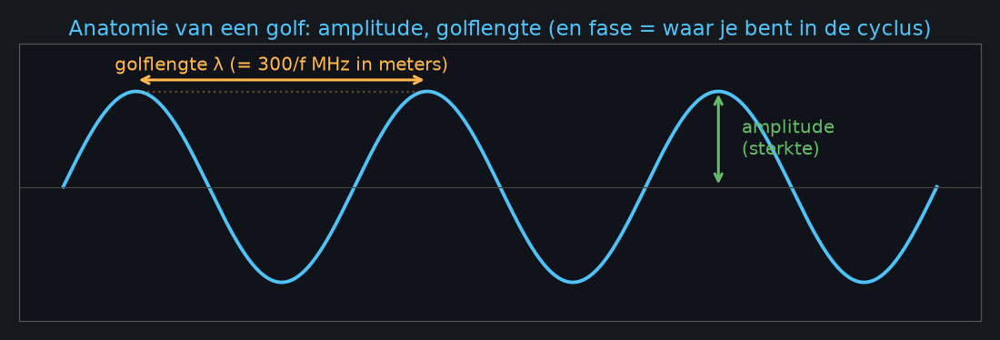
Frequentie en golflengte zijn twee kanten van dezelfde medaille: hoe sneller de golf trilt, hoe korter elke golf is. De handigste formule van deze hele cursus is daarom:
Radio ≈ geluid
Bijna alles wat je intuïtief van geluid begrijpt, vertaalt één-op-één naar radio. Toonhoogte wordt frequentie. Volume wordt signaalsterkte. Een orkest waarin alle instrumenten tegelijk spelen is precies wat het radiospectrum is: duizenden zenders tegelijk in de lucht, elk op hun eigen "toonhoogte". En net zoals jouw oor moeiteloos één stem uit een vol café filtert, filtert een radio-ontvanger één zender uit die kakofonie. Houd dit beeld vast: een SDR is een microfoon voor radiogolven, plus software die je oor nadoet.
Het spectrum: wie woont waar
Omdat iedereen tegelijk zendt, zijn er afspraken over wie welke frequenties gebruikt — een soort bestemmingsplan voor de ether. Grofweg geldt: lage frequenties reizen ver (ze buigen om obstakels heen en kaatsen zelfs tegen de ionosfeer, waardoor je 's nachts op de middengolf heel Europa hoort), terwijl hoge frequenties meer informatie kunnen dragen maar zichtlijn nodig hebben.
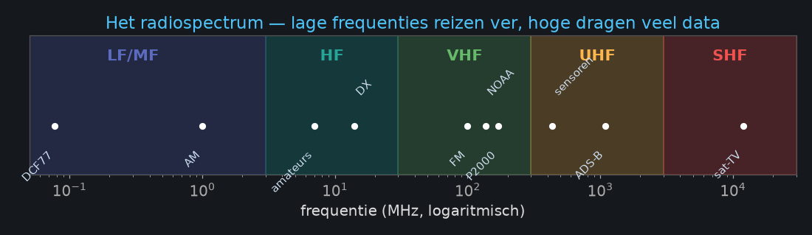
| Band | Frequentie | Typische bewoners |
|---|---|---|
| LF/MF | 30 kHz – 3 MHz | tijdseinzenders (DCF77), AM-omroep |
| HF (kortegolf) | 3 – 30 MHz | wereldwijde omroep, zendamateurs, scheepvaart |
| VHF | 30 – 300 MHz | FM-omroep, luchtvaart, weersatellieten, marifoon |
| UHF | 300 MHz – 3 GHz | sensoren, portofoons, ADS-B, GPS, wifi |
| SHF | 3 – 30 GHz | satelliet-tv, radar, 5G |
Modulatie: informatie op een golf zetten
Een kale draaggolf vertelt niets — het is een constante fluittoon. Om informatie te versturen moet je de golf moduleren: één van de drie eigenschappen laten meebewegen met je boodschap. Bij AM (amplitudemodulatie) varieert de sterkte van de draaggolf met het geluid; simpel en robuust, daarom gebruikt de luchtvaart het nog steeds. Bij FM varieert de frequentie; dat is ongevoeliger voor storing en klinkt daarom beter voor muziek. Digitale signalen ten slotte laten de golf in sprongetjes verspringen — tussen twee frequenties (FSK), fasen (PSK) of combinaties van fase en amplitude (QAM). Elke sprong codeert één of meer bits. In de interactieve slides zie je alle drie live bewegen.
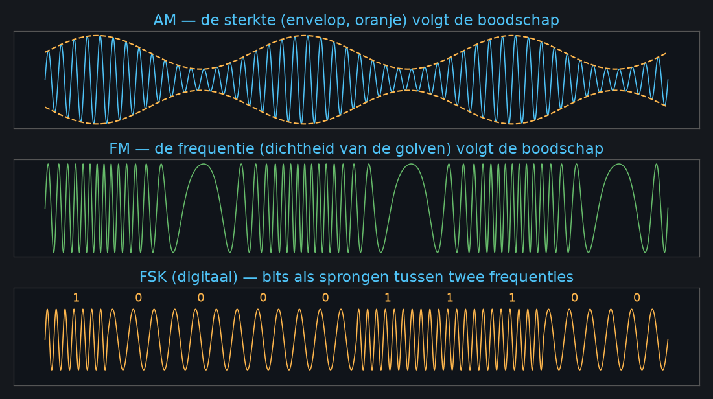
Decibel: de taal van signaalsterkte
Radiosignalen verschillen onvoorstelbaar veel in sterkte. Je wifi-router zendt met zo'n 100 milliwatt; het GPS-signaal dat je telefoon ontvangt is een tienbiljoenste daarvan. Zulke verhoudingen schrijf je niet met nullen, maar logaritmisch, in decibel: +3 dB betekent twee keer zo veel vermogen, +10 dB tien keer zo veel. Het getal dat er echt toe doet is de signaal-ruisverhouding (SNR): hoe ver je signaal boven de altijd aanwezige ruisvloer uitsteekt. Niet de absolute sterkte, maar de SNR bepaalt of je iets kunt decoderen — FM-audio is al verstaanbaar bij zo'n 5 dB, een schoon satellietbeeld vraagt 20 dB. Probeer het zelf in de SNR-speeltuin.
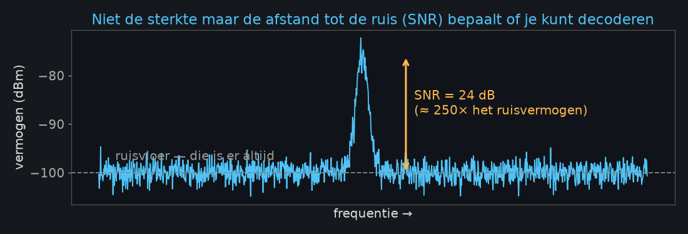
🔬 Lab 1 — Luisteren zonder hardware (±15 min)
Je hebt nog geen SDR nodig: de Universiteit Twente heeft een ontvanger die je via de browser bedient, met heel West-Europa als antennebereik: websdr.ewi.utwente.nl:8901.
- Tune naar 198 kHz, modus AM: BBC Radio 4 op de lange golf.
- Zoek tussen 3.6 en 3.8 MHz een Nederlands amateurgesprek — zet de modus op LSB en hoor hoe "Donald Duck" langzaam verstaanbaar wordt als je precies afstemt.
- Vind rond 14.0–14.1 MHz een morsesignaal (modus CW).
- Let bij elk signaal op de waterfall: hoe feller de kleur boven de blauwe achtergrond, hoe hoger de SNR.
✅ Klaar als je drie modulaties hebt gehoord — AM, SSB en CW — en het verschil kunt beschrijven. Bonus: tune naar 4625 kHz. Hoor jij The Buzzer? 👻
✋ Zelftoets les 1
1. De NOAA-weersatelliet zendt op 137 MHz. Hoe lang is één golf? 300/137 ≈ 2,2 m —
een kwartgolf-antennepoot wordt dus ~55 cm.
2. Wat betekent +20 dB? Honderd keer zo veel vermogen (10 × 10).
3. Waarom gebruikt de luchtvaart nog AM? Simpel, robuust, en twee gelijktijdige zenders
"botsen" hoorbaar in plaats van elkaar onhoorbaar te maken.
Wat is Software Defined Radio?
Hardware wordt software
🎯 Na deze les begrijp je het SDR-principe, IQ-sampling en Nyquist — en kun je aliasing voorspellen.
⌄
Van soldeerbout naar software
Een klassieke radio is een keten van gespecialiseerde hardware: een filter pikt de band eruit, een mixer verschuift de frequentie, nog een filter, dan een demodulator die precies voor één soort modulatie is gebouwd, en ten slotte een versterker. Wil je een ander soort signaal ontvangen? Dan bouw je een ander apparaat. Honderd jaar lang was radio dus vooral een hardwarehobby.
Software Defined Radio draait dat principe om: digitaliseer het antennesignaal zo vroeg mogelijk, en doe al het andere in software. De hardware wordt minimaal — een versterker, een tuner en een analoog-digitaalomzetter (ADC) — en alles wat daarna komt is code: filteren, demoduleren, decoderen, analyseren. Eén apparaat wordt duizend radio's. Een nieuw protocol ontvangen betekent niet solderen, maar software updaten. Dat is de revolutie die radio-onderzoek democratiseerde: wat vroeger een lab met een spectrumanalyzer van tienduizend euro vereiste, doet nu een hobbyist met een dongle van 35 euro.
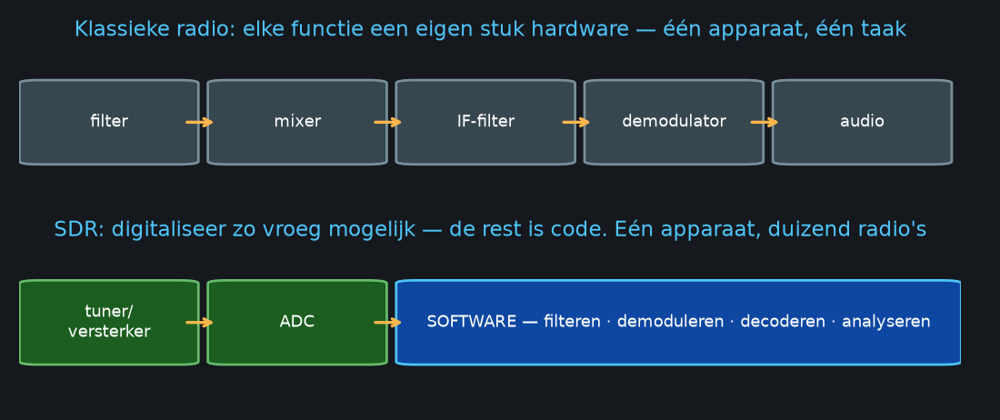
IQ-samples: de ruwe grondstof
Hier wordt het heel even wiskundig, maar het beeld is simpel. Een SDR meet het signaal niet één keer, maar twee keer tegelijk: één meting direct (I, in-phase) en één meting een kwartslag verschoven (Q, quadrature). Samen vormen I en Q een punt in een plat vlak — een draaiend wijzertje, als je wilt. De lengte van het wijzertje is de amplitude van het signaal, de hoek is de fase, en de draaisnelheid is de frequentie. Doordat je met IQ-samples amplitude én fase kent, kun je elke denkbare modulatie achteraf in software demoduleren. Kijk naar de draaiende fasor in de slides om dit te zien gebeuren.
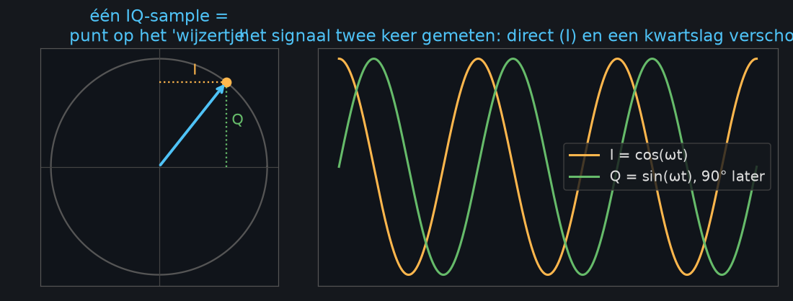
Plot je de IQ-punten van een digitaal signaal op de beslismomenten, dan verschijnen de symbolen als wolkjes — het constellatiediagram. Hoe meer wolkjes, hoe meer bits per symbool, en hoe gevoeliger voor ruis:
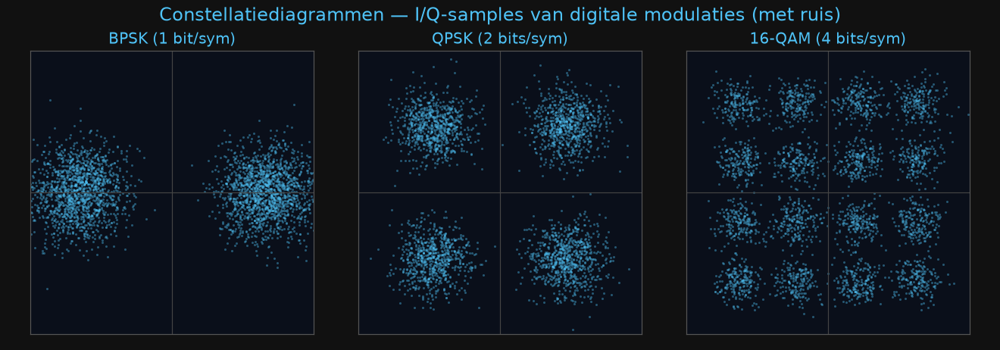
Nyquist, samplerate en spoken
Hoe vaak moet je meten? Het beroemde theorema van Nyquist zegt: minstens twee keer zo snel als de hoogste frequentie die je wilt vastleggen. Meet je te langzaam, dan gebeurt er iets verraderlijks: het signaal "vouwt terug" en verschijnt als spook-signaal op een verkeerde frequentie — aliasing. Dat is geen theoretisch randgeval; het is de reden dat elke SDR filters heeft en dat wagenwielen in oude westerns achteruit lijken te draaien (een camera sampled immers ook).
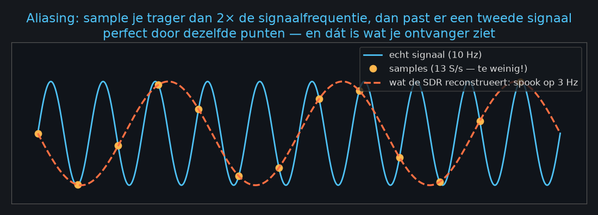
Voor SDR's met IQ-samples geldt een prettige vuistregel: de samplerate is de breedte van het spectrum dat je tegelijk ziet. Een RTL-SDR op 2,4 MS/s laat 2,4 MHz spectrum zien. Daar hangt wel een prijskaartje aan: 2,4 miljoen samples van 2 bytes per seconde is bijna 5 MB per seconde — een uurtje "even alles opnemen" kost 17 GB. Opnemen doe je dus kort en gericht.
🔬 Lab 2 — Voorspel het spook (±10 min)
Open de aliasing-demo in de slides.
- Het signaal heeft 10 cycli. Zet de slider op 18 samples — maar voorspel éérst op papier waar het spook verschijnt (hint: f − fs = 10 − 18 → gevouwen: 8).
- Herhaal voor 16 en 24 samples. Wanneer klopt je formule direct, wanneer vouwt hij?
- Python-bonus: sample een toon van 440 Hz op 600 Hz en hoor het alias:
import numpy as np, sounddevice as sd t = np.arange(0, 2, 1/600) # fs = 600 Hz sd.play(np.sin(2*np.pi*440*t), 600) # hoor je 160 Hz?
✅ Klaar als je de spookfrequentie twee keer goed voorspelt vóór je de slider beweegt.
✋ Zelftoets les 2
1. RTL-SDR afgestemd op 100 MHz met 2,4 MS/s — welk spectrum zie je? 98,8–101,2 MHz.
2. Verschijnt een zender op 101,5 MHz in beeld? Nee — buiten de band; hertunen.
3. Waarom kun je met IQ-samples elke modulatie demoduleren? Omdat je amplitude én fase van
het signaal kent — meer informatie bestaat er niet.
Hardware
Dongles en antennes
🎯 Na deze les kies je de juiste SDR en antenne, en ontvangt je dongle zijn eerste signaal.
⌄
De gelukkigste vergissing van de radiogeschiedenis
In 2012 ontdekten hackers iets moois: een goedkope USB-stick voor digitale tv (DVB-T), gebouwd rond de Realtek RTL2832U-chip, kon in een verborgen modus zijn ruwe IQ-samples rechtstreeks naar de computer sturen. Een tv-stick van vijftien euro bleek een volwaardige software defined radio. Die vondst — de "RTL-SDR hack" — veroorzaakte een explosie van hobbyprojecten en is de reden dat deze cursus bestaat.
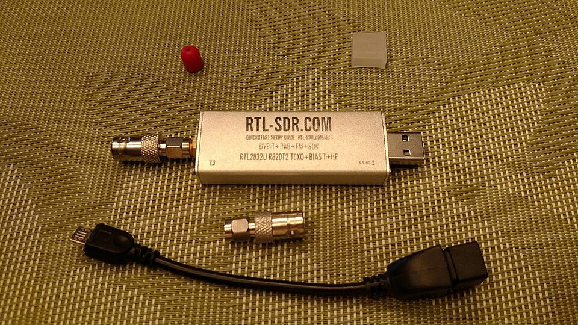
Moderne versies zoals de RTL-SDR Blog V3/V4 zijn speciaal voor hobbyisten doorontwikkeld: een stabiele temperatuurgecompenseerde klok (TCXO), een aluminium behuizing tegen stoorsignalen, een bias-tee om een antenneversterker te voeden, en "direct sampling" waarmee je ook de kortegolf onder 24 MHz kunt ontvangen. Bereik: 500 kHz tot 1,7 GHz, alléén ontvangen. Koop een origineel exemplaar via rtl-sdr.com — kloons drijven qua frequentie weg zodra ze warm worden.
Als je ook wilt zenden
De HackRF One (±€300, open hardware) ontvangt van 1 MHz tot 6 GHz en kan ook zenden. Dat opent deuren — eigen protocollen testen, satellieten aanroepen met een amateurlicentie — maar schept ook verantwoordelijkheid.
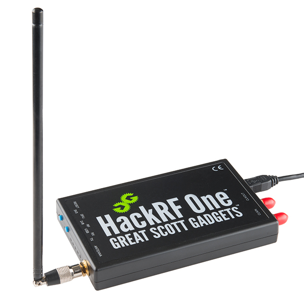
Tussen dongle en HackRF zitten nog de Airspy en SDRplay (betere ontvangers, 12–14 bit) en de PlutoSDR (zenden én ontvangen tegelijk, met FPGA). Begin niettemin gewoon met een RTL-SDR: negentig procent van wat je in deze cursus leert heeft aan die dongle genoeg.
De antenne is de helft van je succes
Beginners geven hun geld aan een betere SDR; gevorderden aan een betere antenne. Een matige antenne met een topontvanger verliest het áltijd van een goede antenne met een goedkope ontvanger. De vuistregel: een antenne werkt het best als zijn lengte past bij de golflengte — meestal een kwart of een halve golf (daar is de formule uit les 1 weer). En verder: buiten is beter dan binnen, hoog is beter dan laag, en een korte goede kabel verslaat een lange slechte.
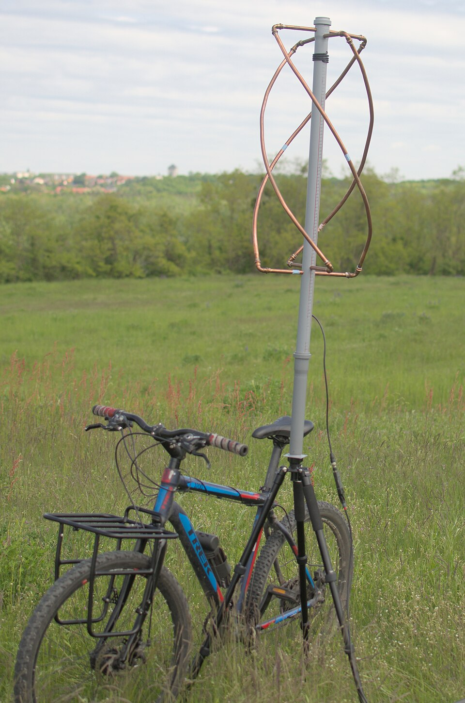
| Antenne | Goed voor | Opmerking |
|---|---|---|
| Telescoop-dipool | alles (breedband) | zit bij de RTL-SDR-kit; uitschuiven op lengte |
| Discone | scannen 25 MHz–1,3 GHz | breedband, geen versterking |
| Colineair | ADS-B 1090 MHz | klein, veel versterking op één band |
| V-dipool / QFH | weersatellieten 137 MHz | omhoog gericht; QFH vangt de ronddraaiende polarisatie |
| Longwire / mini-whip | kortegolf | een lang stuk draad buiten doet wonderen |
🔬 Lab 3 — Dongle aan de praat (±20 min)
- Installeer SDR++. Windows: vervang de USB-driver met Zadig.
Linux:
sudo apt install rtl-sdr. - Test de dongle:
rtl_test -t— geen "lost samples"? Dan ben je goed. - Tune naar je sterkste lokale FM-zender. Geluid? Gefeliciteerd — je eerste eigen ontvangst! 🎉
- Het antenne-experiment: noteer de signaalsterkte midden in de kamer en daarna bij het raam. Het verschil (meestal 6–15 dB — onthoud: 10 dB is tien keer zo veel vermogen!) is je eerste les in antenneplaatsing.
✅ Klaar als FM speelt en je het raam-effect in dB kunt benoemen. Geen dongle? Doe het lab via een WebSDR.
Software & tools
Van FFT tot GNU Radio
🎯 Na deze les lees je een waterfall als een boek en bouw je je eerste flowgraph.
⌄
Eerst even: wat doet een FFT?
Je SDR levert alleen maar samples in de tijd — een eindeloze rij getallen. Daar ziet een mens niets in. De Fast Fourier Transform is het gereedschap dat die rij omzet naar iets begrijpelijks: hij werkt als een prisma dat wit licht in kleuren splitst, maar dan voor geluid en radio — hij splitst het signaal in de frequenties waaruit het bestaat. Eén FFT is één momentopname van het spectrum. Plak duizenden van die momentopnames onder elkaar en je krijgt de waterfall: frequentie horizontaal, tijd verticaal, signaalsterkte als kleur. Je oor doet trouwens precies hetzelfde: trillingen in, tonen eruit. Speel met de live FFT-demo om het gevoel te krijgen.
De waterfall lezen
De waterfall is je belangrijkste venster op de ether, en na een paar avonden herken je signalen op het oog, nog vóór je ze hoort. Een smalle rechte streep: een FM-draaggolf van een portofoon of baken. Een brede wollige band: FM-omroep met muziek. Korte felle blokjes die komen en gaan: pager-bursts of sensoren. Stippen die over de band springen: een frequency hopper. Hieronder een echte opname — gemaakt met precies dezelfde FFT-bewerking die SDR++ gebruikt:
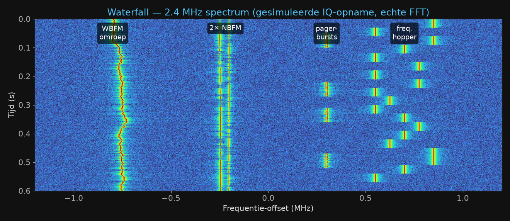
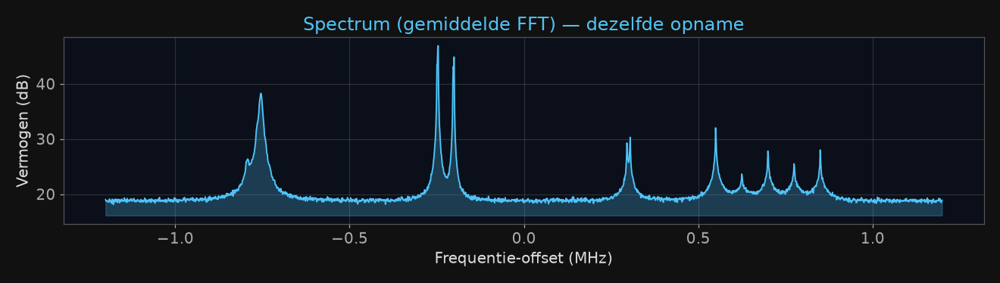
En zo klinken ze. Elke modulatie heeft naast een vingerafdruk ook een eigen geluid (alle fragmenten hieronder zijn met NumPy gesynthetiseerd):
📡 Morse — "CQ CQ DE PA0SDR K":
📟 POCSAG pager-bursts (let op de ratelende preamble):
🛰️ NOAA-weersatelliet — het beroemde "tik-tok":
📻 Over een FM-zender heen draaien:
Wil je dit zelf ervaren zonder dongle? In de slides zit een speelbare tuner: sleep over de band, vind de morse-baken, de muziekzender en de pager — met echte detuning-effecten.
Het tool-landschap
Voor elke taak bestaat een gratis opensource-tool. Luisteren en verkennen doe je met SDR++ (alle platforms) of GQRX. Voor specifieke signalen zijn er specialisten: dump1090 voor vliegtuigen, rtl_433 voor sensoren, SatDump voor weersatellieten, multimon-ng voor pagers. Voor onbekende signalen pak je Universal Radio Hacker of inspectrum. En als je zelf wilt bouwen is er GNU Radio.
GNU Radio: radio als blokkendoos
GNU Radio is een grafische bouwdoos voor signaalverwerking: je sleept blokken op een canvas — bron, filter, demodulator, luidspreker — en verbindt ze met lijnen tot een flowgraph. Elk blok bewerkt de stroom samples en geeft hem door. Een complete FM-radio is vijf blokken. Het mooie: GNU Radio Companion genereert er gewoon Python-code van, dus alles wat je klikt kun je ook scripten:
from gnuradio import gr, analog, filter, audio
import osmosdr
class FMRadio(gr.top_block):
def __init__(self, freq=100.7e6):
gr.top_block.__init__(self)
src = osmosdr.source() # RTL-SDR bron
src.set_sample_rate(2.4e6)
src.set_center_freq(freq)
lpf = filter.fir_filter_ccf(10, # 2.4M -> 240k
filter.firdes.low_pass(1, 2.4e6, 100e3, 10e3))
demod = analog.wfm_rcv(quad_rate=240e3, audio_decimation=5)
self.connect(src, lpf, demod, audio.sink(48000))
FMRadio().run()🔬 Lab 4 — Waterfall-safari + flowgraph (±25 min)
- Scan met SDR++ de band 430–440 MHz en maak screenshots van drie verschillende signaalvormen in de waterfall.
- Zoek je vondsten op bij sigidwiki.com — wat denk je dat ze zijn?
- Bouw in GNU Radio Companion de FM-ontvanger van hierboven na en laat hem spélen.
✅ Klaar als je flowgraph geluid geeft en je twee van de drie signalen hebt geïdentificeerd.
Signalen decoderen
De ether leert praten
🎯 Na deze les heb je minstens één écht digitaal signaal gedecodeerd — vliegtuig, sensor of pager.
⌄
Vliegtuigen volgen: ADS-B
Elk verkeersvliegtuig roept twee keer per seconde zijn positie, hoogte, snelheid en
roepnaam om, op 1090 MHz, onversleuteld. Dit systeem heet ADS-B en het is het perfecte
eerste decodeerproject: de signalen zijn sterk, de software (dump1090) is één
commando, en het resultaat — een live kaart met tientallen vliegtuigen die jouw
antenne hoort — is onweerstaanbaar. Met een dakantenne haal je 200 tot 400 kilometer, want op
1090 MHz geldt: zichtlijn. Websites als Flightradar24 zijn in feite duizenden van zulke
hobby-ontvangers aan elkaar geknoopt; lever jij data, dan krijg je er een gratis
premium-account voor terug.
Pagers leven nog: POCSAG en P2000
Het piepersysteem uit de jaren tachtig is springlevend: ziekenhuizen en hulpdiensten
vertrouwen er nog dagelijks op, juist omdat het zo simpel en robuust is. In Nederland zendt
P2000 op 169,65 MHz alle alarmeringen van brandweer en ambulance uit — met
rtl_fm en multimon-ng decodeer je ze in één pijplijn. Besef wel:
deze berichten bevatten soms persoonsgegevens. Meelezen voor eigen studie is gedoogd;
publiceren is dat niet (les 7).
Foto's uit de ruimte
Misschien wel het magischste project uit deze cursus: drie NOAA-weersatellieten en de Russische Meteor-serie vliegen in een lage polaire baan rond de aarde en zenden continu hun camerabeeld uit op 137 MHz — analoog, ontworpen in de jaren zeventig, en met een zelfgebouwde antenne van vijf euro aan draad te ontvangen. Een satelliet is per overkomst zo'n twaalf minuten te horen; plan de pass met n2yo.com, neem op met SatDump, en je hebt je eigen satellietfoto van Europa.
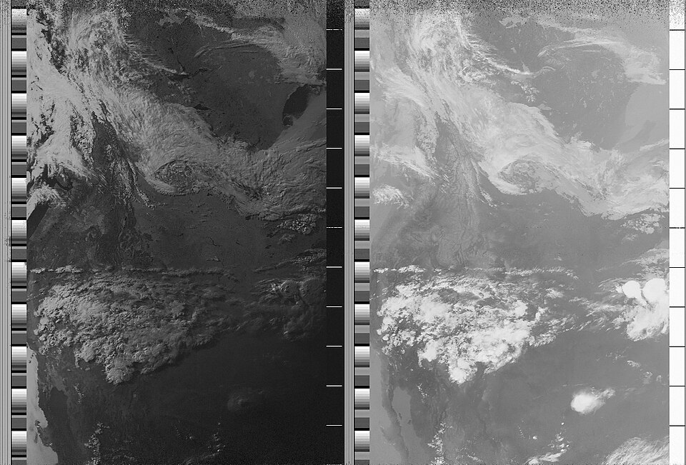
Het APT-formaat zelf stamt uit het analoge tijdperk en is daardoor heerlijk inzichtelijk: de satelliet zendt beeldlijn voor beeldlijn uit, telkens twee camerabeelden naast elkaar (zichtbaar licht en infrarood), voorafgegaan door synchronisatiepulsen waarmee de decoder elke lijn uitlijnt — de verticale streeppatronen:
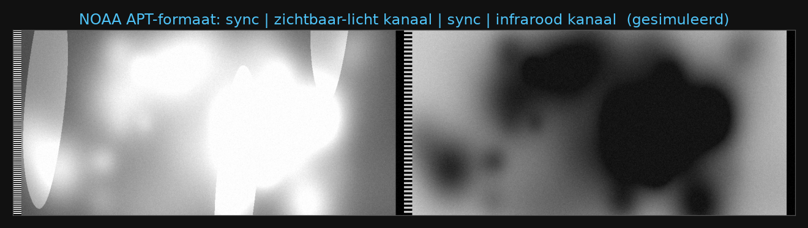
Het IoT om je heen: rtl_433
De 433- en 868-MHz-banden zijn het riool én de goudmijn van de ether: weerstations,
deurbellen, bandenspanningssensoren, energiemeters — alles kwettert er onversleuteld.
Het programma rtl_433 kent meer dan 250 van die protocollen en spuugt alles uit
als nette JSON. Eén avond draaien en je weet welk weerstation van wie is, hoe koud het in de
schuur van de buren is en hoe vaak de kat door het luikje gaat. Die JSON-stroom is bovendien
het perfecte voer voor les 6.
En onbekende signalen?
Vroeg of laat zie je een streepje in de waterfall dat nergens gedocumenteerd staat. Dan begint het echte detectivewerk, en dat volgt altijd hetzelfde stappenplan: signaal vinden en opnemen als IQ-bestand → bekijken in inspectrum of URH (welke modulatie? welke symboolrate?) → demoduleren naar bits → patronen zoeken (preambles, tellers, checksums) → een decoder schrijven. Veel 433-MHz-apparaten gebruiken verbluffend simpele vaste codes — precies de reden dat oude autosleutels voor replay-aanvallen vatbaar waren en moderne rolling codes gebruiken.
📻 Welke frequenties verder de moeite zijn? De frequentie-safari in de slides bevat het complete luistermenu voor Nederland: van DCF77 en The Buzzer op de kortegolf tot radiosondes en Meteosat op UHF.
🔬 Lab 5 — Kies je missie (±30 min)
Decodeer één echt signaal. Kies de missie die bij je past:
- ✈️ Missie A:
dump1090 --interactive— hoeveel vliegtuigen zie je, en wat is je verste ontvangst in kilometers? - 🌡️ Missie B:
rtl_433— identificeer drie apparaten in je omgeving. - 📟 Missie C:
rtl_fm -f 169.65M -s 22050 | multimon-ng -t raw -a FLEX -— tel de P2000-alarmeringen in tien minuten (alleen kijken, niets delen).
✅ Klaar als je missie echte gedecodeerde data oplevert. Bonus: plan op n2yo.com een NOAA-pass van ≥ 60° elevatie en zet je wekker. 🛰️
Data-analyse
Van ether naar inzicht
🎯 Na deze les zet je decoderdata om in grafieken en inzichten.
⌄
De pipeline
Alles wat je tot nu toe deed past in één keten: antenne → IQ-samples → DSP (filteren, demoduleren) → decoder → gestructureerde berichten → opslag → analyse. Het krachtige van die scheiding is dat elke stap apart te bewaren en te herhalen is. Een IQ-opname kun je eindeloos opnieuw analyseren met steeds betere decoders (het standaardformaat daarvoor heet SigMF), en de JSON-berichten van je decoder zijn gewoon data zoals een data-analist ze kent.
IQ-data in Python
Je hoeft geen DSP-ingenieur te zijn om met IQ-bestanden te spelen; NumPy maakt het bijna
huiselijk. Een RTL-SDR-opname laden is twee regels, een waterfall plotten is er drie, en —
het mooiste — FM-demodulatie is er precies één: np.angle(iq[1:] * np.conj(iq[:-1]))
berekent het fasverschil tussen opeenvolgende samples, en dat is FM-demodulatie.
Dit visualiseert die ene regel:
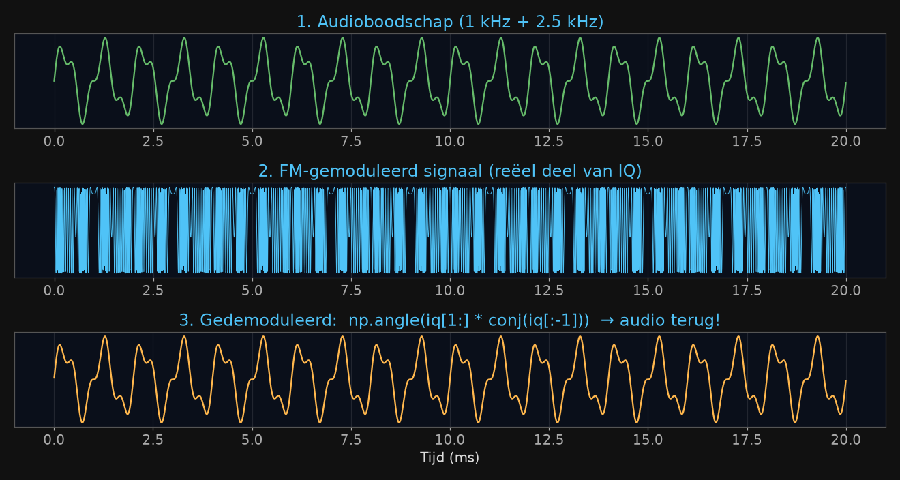
Wil je hier dieper in? Het gratis online boek PySDR is de beste vervolgcursus die er bestaat.
Berichten analyseren met pandas
Decoders produceren JSON; pandas eet JSON. Daarmee wordt radiodata gewoon... data. Twee voorbeelden die verrassend veel over je eigen setup vertellen: groepeer ADS-B-ontvangsten per kompasrichting en plot de maximale afstand — je ziet letterlijk welk gebouw je antenne blokkeert. Of log een etmaal buurt-sensoren en plot de temperatuurcurves — je ziet wie er 's nachts stookt.
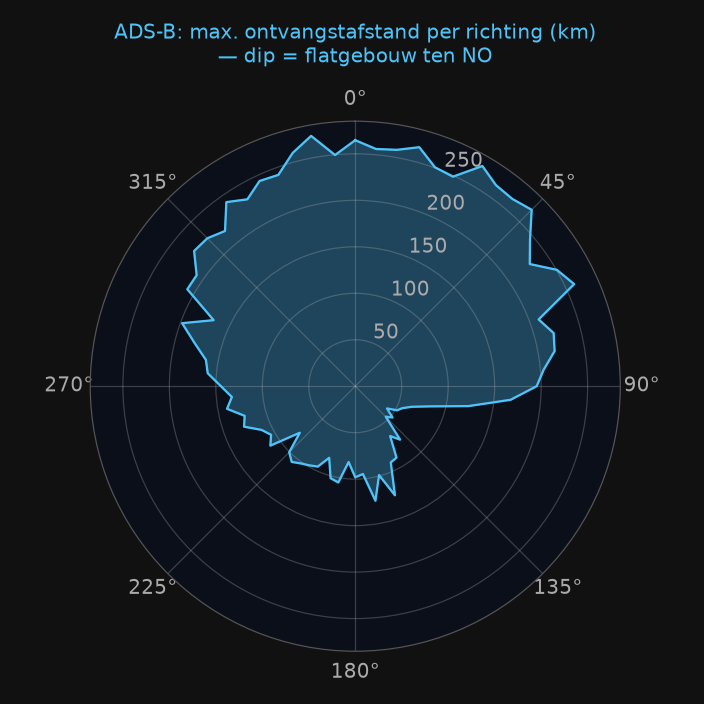
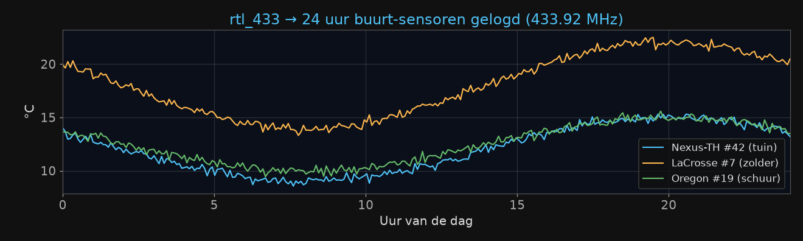
Twee stappen verder
Een Raspberry Pi met dongle is een 24/7-meetstation van nog geen vijf watt. Koppel
rtl_433 via MQTT aan InfluxDB en Grafana en je hebt een professioneel dashboard;
of word onderdeel van citizen-science-netwerken als ADSBexchange en SatNOGS. En wie machine
learning kent: een spectrogram is gewoon een plaatje, dus alle computer vision-technieken
werken — automatische modulatieherkenning en zelfs het herkennen van individuele zenders aan
hun hardware-imperfecties ("RF fingerprinting") zijn actieve onderzoeksvelden waarin je met
zelf opgenomen trainingsdata direct kunt meedoen.
🔬 Lab 6 — Van JSON naar inzicht (±20 min)
Geen eigen data? Gebruik de oefenset uit deze cursus: assets/sample_rtl433.jsonl (24 uur, 3 sensoren).
import pandas as pd
df = pd.read_json("assets/sample_rtl433.jsonl", lines=True)
print(df.model.value_counts()) # 1. berichten per sensor
df.pivot_table(index="time", columns="model",
values="temperature_C").plot() # 2. temperatuurverloop
# 3. jouw beurt: wanneer was het koudste moment? welke sensor
# hangt binnen? en welke heeft een zwakke batterij?✅ Klaar als je plot drie lijnen toont en je vraag 3 met code beantwoordt.
Wetgeving en ethiek
Wat mag — en wat niet
🎯 Na deze les weet je wat mag, wat niet, en hoe je legaal gaat zenden.
⌄
De korte samenvatting van het Nederlandse recht past in drie woorden: ontvangen vrij · delen beperkt · zenden gereguleerd. De uitwerking:
Ontvangen mag in principe altijd — een ontvanger bezitten en gebruiken is vrij. Maar wat je opvangt is niet automatisch van jou: niet-openbare communicatie mag je niet delen of misbruiken (Telecommunicatiewet), en van afluisteren van bijvoorbeeld telefonie moet je sowieso wegblijven. Praktisch: omroep, luchtvaart, zendamateurs, satellieten, sensoren en ADS-B zijn allemaal prima; bij P2000 geldt: meelezen gedoogd, maar berichten met persoonsgegevens publiceren is een AVG-overtreding.
Zenden zonder toestemming is verboden en wordt gehandhaafd door de RDI (Rijksinspectie Digitale Infrastructuur). Legaal zenden kan op twee manieren: met conforme apparatuur in de vergunningsvrije banden (wifi, PMR446, 433/868 MHz — let op: een HackRF is géén conform apparaat), of met een amateurradiolicentie. Die laatste is de koninklijke weg: het N-examen is goed te doen, je krijgt een eigen roepnaam, en experimenteren op de amateurbanden is daar niet alleen toegestaan maar zelfs het hele idee. Kijk bij VERON voor cursussen — of vraag rond in de hackerspace.
Ethiek ten slotte: SDR geeft je toegang tot veel, en daar hoort volwassenheid bij. Eigen apparaten onderzoeken, open signalen decoderen, publiceren over techniek: doen. Jammen, replay-aanvallen op andermans spullen, GPS spoofen, persoonsgegevens verspreiden: nooit. Vind je een kwetsbaarheid in een product, meld die dan netjes bij de fabrikant of het NCSC (responsible disclosure).
🔬 Lab 7 — Mag dit? (±10 min)
Oordeel eerst zelf, klap dan het antwoord open:
1. Je leest met rtl_433 het weerstation van de buren uit.
Mag. Vrij ontvangbaar, geen persoonsgegevens. Netjes: vertel het ze — gegarandeerd een leuk gesprek.2. Je zet P2000-meldingen mét adressen op social media.
Mag niet. Persoonsgegevens verspreiden: AVG plus Telecommunicatiewet.3. Je test je HackRF "heel even" op 433,92 MHz met 1 mW.
Mag niet. De ISM-band vereist conforme apparatuur; een HackRF is dat niet. Dummy load of kabel!4. Met je N-licentie roep je CQ op 145,500 MHz.
Mag. Daar is die licentie voor — vergeet alleen je roepnaam niet.Eindopdracht
Jouw eigen station
🎯 Een werkend ontvangststation, 48 uur data en een verhaal van 5 minuten.
⌄
Alles komt samen in de capstone. Je bouwt een ontvangststation rond een zelfgekozen doel — vliegtuigen, een weersatelliet, de sensoren in je straat, of iets geks zoals radiosondes van weerballonnen — en je laat het minstens 48 uur draaien. Je documenteert je antennekeuze met de λ/4-regel uit les 1, logt je data zoals in les 6, en maakt er één grafiek en één verhaal van: wat verraste je? Dat presenteer je in vijf minuten in de hackerspace, inclusief wat er misging — want dat is altijd het leerzaamste deel.
Beoordeel jezelf op twee vragen: draait het 48 uur stabiel, en kun je elke ontwerpkeuze uitleggen? Twee keer ja? Dan ben je officieel SDR-hobbyist.
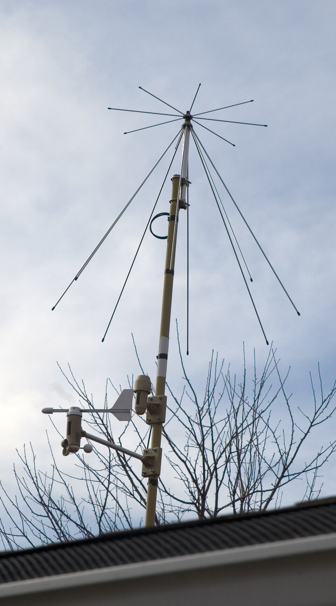
Hoe verder na deze cursus
| Wanneer | Doe dit |
|---|---|
| Vandaag | FM ontvangen in SDR++ (lab 3) |
| Deze week | vliegtuigen volgen met dump1090; sensoren met rtl_433 |
| Deze maand | eigen weersatellietfoto (V-dipool + SatDump); capstone |
| Daarna | GNU Radio verdieping, PySDR doorwerken, N-licentie halen |
Spiekbrief
| Frequentie | Wat |
|---|---|
| 87,5–108 MHz | FM-omroep |
| 118–137 MHz | luchtvaart (AM!) |
| 137 MHz | NOAA / Meteor weersatellieten |
| 144 / 430 MHz | zendamateurs |
| 169,65 MHz | P2000 |
| 433,92 / 868 MHz | sensoren (ISM) |
| 1090 MHz | ADS-B |
Formules: λ(m) ≈ 300/f(MHz) · zichtbare bandbreedte = samplerate · +3 dB = ×2 vermogen.
Bronnen: pysdr.org · rtl-sdr.com ·
sigidwiki.com · r/RTLSDR · VERON.